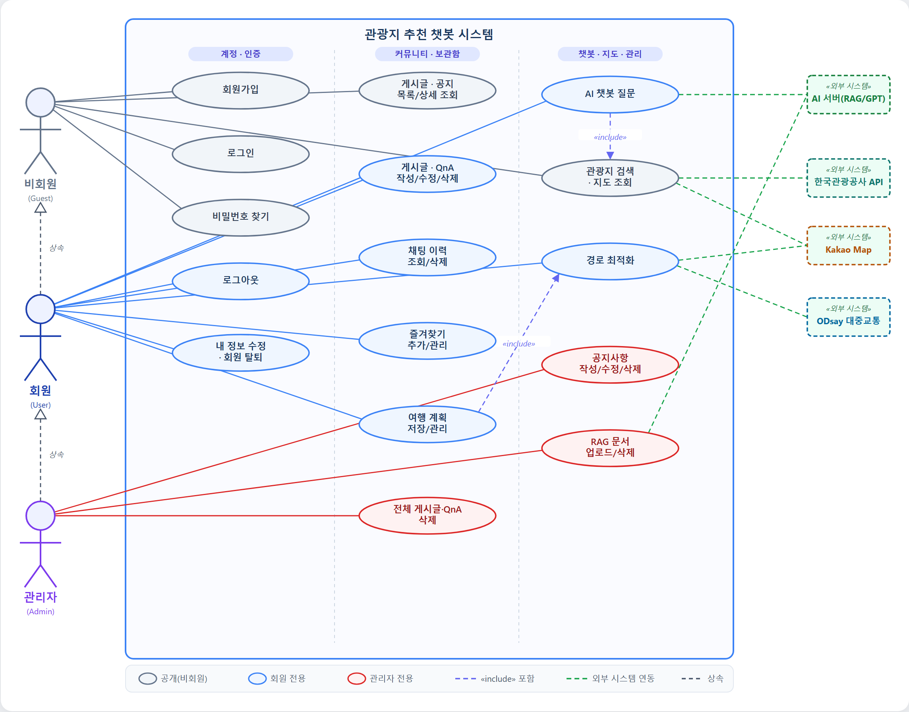
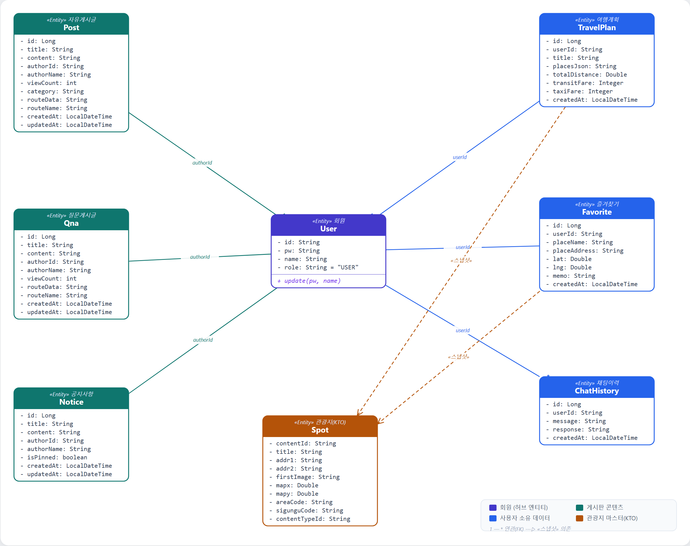
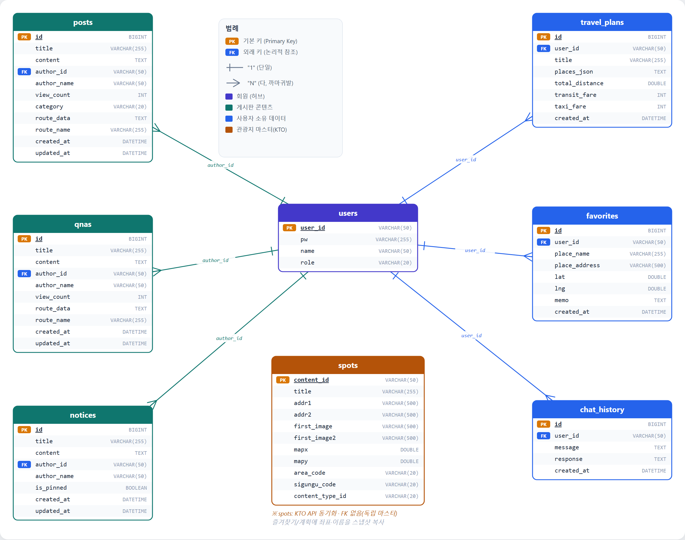
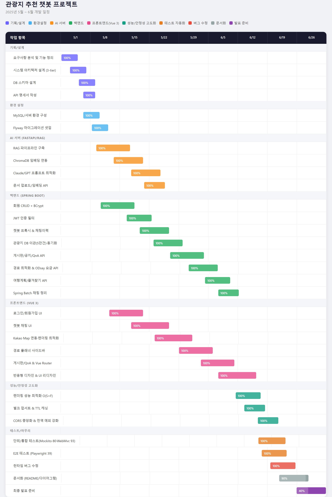
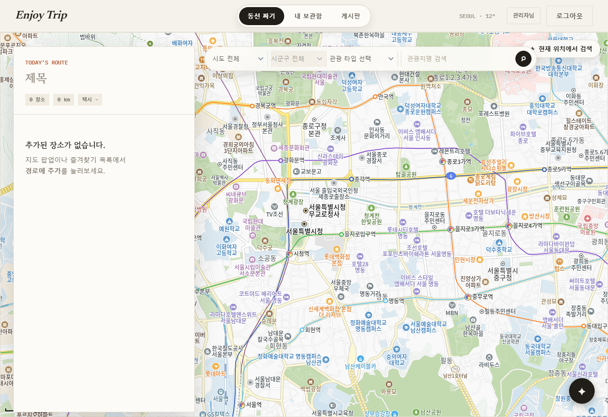
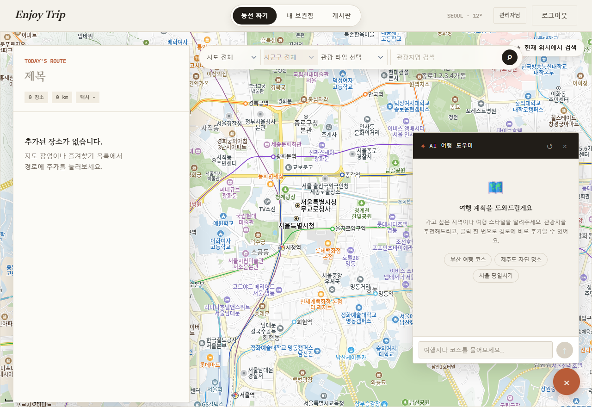
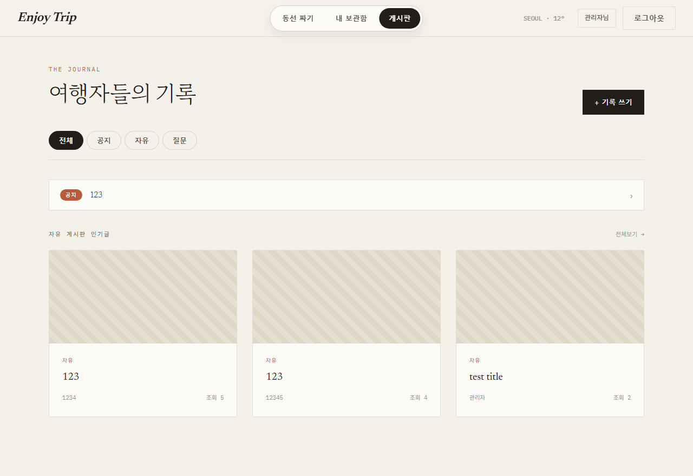
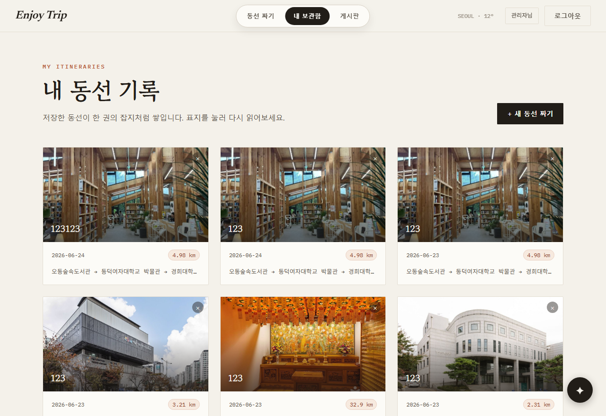
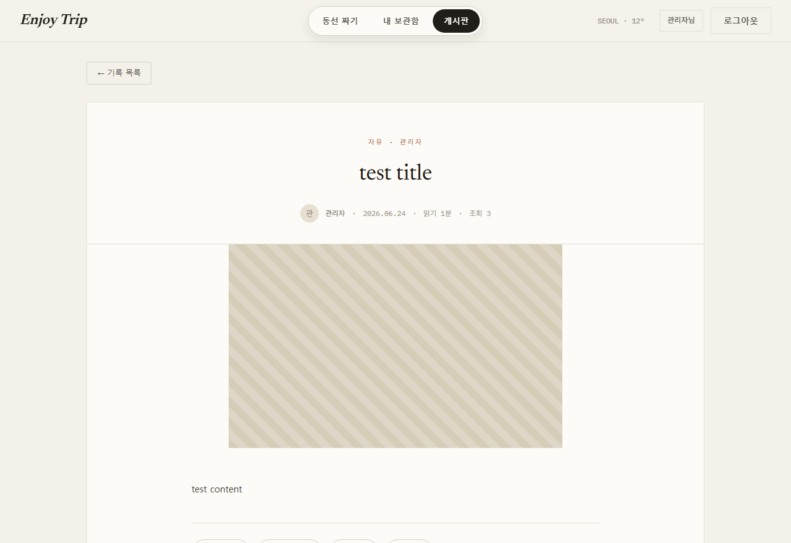
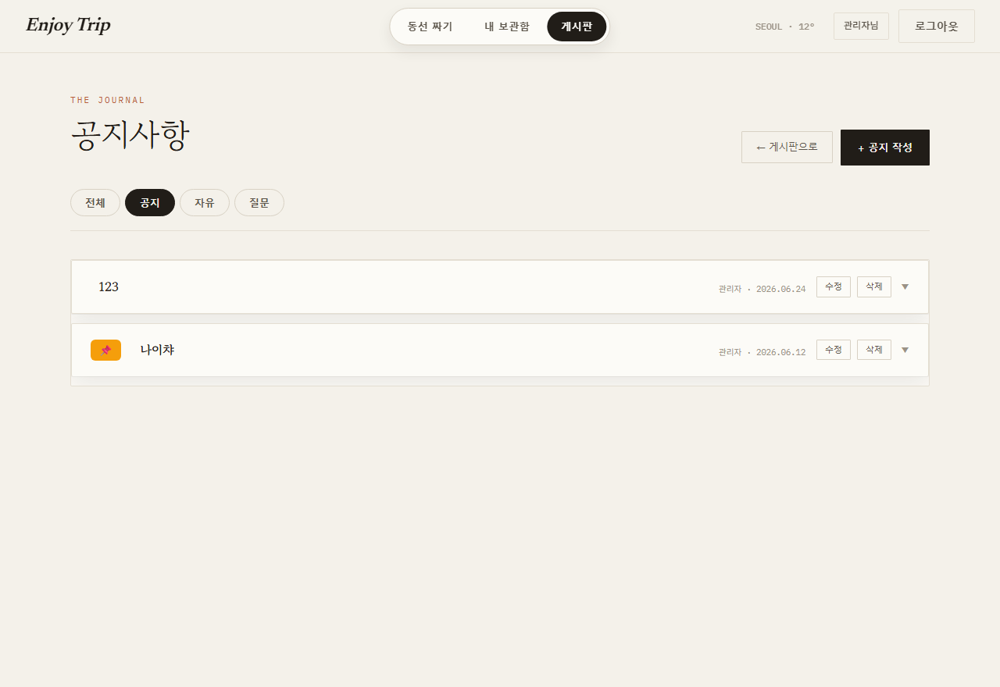

| 프로젝트명 | 관광지 추천 챗봇 (AI 여행 플래너) |
| 목표 | 생성형 AI와 RAG를 결합해 자연어 질의로 관광지를 추천하고, 지도·경로 최적화·대중교통 요금 산출까지 연계하는 여행 플래너 제공 |
| 핵심 가치 | ① 대화형 관광지 추천 ② 최적 동선·요금 계산 ③ 여행 계획 저장·공유 커뮤니티 |
| 대상 사용자 | 비회원(게스트) · 회원(User) · 관리자(Admin) |
| 분류 | 요구사항 |
|---|---|
| 회원·인증 | 회원가입, JWT 로그인/로그아웃, 비밀번호 찾기, 내 정보 수정·탈퇴, 권한 분리(USER/ADMIN), 세션 만료 시 자동 로그아웃 |
| AI 챗봇 | RAG 기반 관광지 추천, 직전 대화 맥락 유지, 추천 명소 원클릭 경로 추가, 채팅 이력 저장·조회·삭제 |
| 지도·관광지 | 관광지 5만여 건 지도 표시, 시도/시군구/관광타입 필터, "이 위치에서 검색"(뷰포트 범위), 마커 클러스터링·뷰포트 컬링 |
| 경로·요금 | TSP 기반 경로 최적화, 도보/자동차 동선, ODsay 대중교통·Kakao 택시 요금 실시간 산출 |
| 여행계획·보관함 | 경로 플래너 계획 저장/조회/수정/삭제(요금 포함), 즐겨찾기 추가/목록/삭제 |
| 커뮤니티 | 자유게시판·질문(QnA) 게시글 CRUD, 공지사항(관리자), 페이지네이션, 여행 계획 첨부·가져오기 |
| 관리자 | 공지 작성·수정·삭제, RAG 문서 업로드/삭제, 전체 게시글·QnA 삭제 |
| 온보딩 | 최초 로그인 시 스포트라이트 튜토리얼 투어 |
| 분류 | 요구사항 |
|---|---|
| 성능 | 마커 렌더링 O(S+F) 해시 룩업, 관광지 동기화 벌크 업서트, TTL 캐시, 요금 병렬 계산(~300ms), 복합 인덱스 조회(~1ms) |
| 보안 | BCrypt 단방향 해시, JWT 인증 필터, CORS 허용 출처 제한, 본인/관리자 권한 검증 |
| 안정성 | Flyway DB 마이그레이션, 전역 예외 처리(@RestControllerAdvice), 외부 API 타임아웃·폴백, 401 자동 로그아웃 |
| 품질·테스트 | 단위 테스트(Mockito 80) · 컨트롤러 슬라이스(@WebMvcTest 93) · E2E(Playwright 39) |
| 호환성·UX | PC/모바일 반응형, 글래스모피즘 UI, 사이드바 레이아웃 |
| 유지보수 | 3-Tier 분리, 도메인형 패키지 구조, 환경별 설정 분리(application-secret) |
비회원·회원·관리자 3개 액터의 상속(일반화) 관계와 시스템 유스케이스, 외부 시스템(AI 서버·관광공사·Kakao·ODsay) 연동을 표현한다.

[그림 2-1] 관광지 추천 챗봇 Use-Case Diagram
| 액터 | 주요 유스케이스 |
|---|---|
| 비회원 | 회원가입, 로그인, 비밀번호 찾기, 관광지 검색·지도 조회, 게시글·공지 조회 |
| 회원 (비회원 상속) | AI 챗봇 질문, 채팅 이력, 경로 최적화, 여행 계획·즐겨찾기 관리, 게시글·QnA 작성, 내 정보 수정 |
| 관리자 (회원 상속) | 공지사항 관리, RAG 문서 업로드/삭제, 전체 게시글·QnA 삭제 |
Spring Boot 도메인 엔티티 기준 클래스 모델. User를 허브로 게시판 콘텐츠(Post·Qna·Notice)와 사용자 소유 데이터(TravelPlan·Favorite·ChatHistory)가 1:N 연관되며, Spot은 KTO 동기화 독립 마스터로 즐겨찾기·계획에 스냅샷 복사된다.

[그림 3-1] 도메인 클래스 다이어그램 (UML)
MySQL 8 스키마(Flyway V1~V8) 기준 ER 모델. Crow's Foot 표기법으로 users와 각 테이블의 1:N 관계를 표현한다. (FK는 인덱스 기반 논리적 참조)

[그림 4-1] 데이터베이스 ER Diagram (Crow's Foot)
| 테이블 | 설명 | PK |
|---|---|---|
| users | 회원 계정·권한(USER/ADMIN) | user_id |
| posts / qnas | 자유게시글 / 질문게시글 (author_id → users) | id |
| notices | 공지사항, 상단 고정(is_pinned) | id |
| travel_plans | 여행 계획 + 예상 요금(transit/taxi_fare) | id |
| favorites | 즐겨찾기 장소(좌표·메모) | id |
| chat_history | AI 챗봇 대화 이력 | id |
| spots | 관광지 마스터(KTO 5만여 건, 독립) | content_id |

[그림 5-1] 프로젝트 일정 간트 차트
실제 구현 화면 기준 주요 페이지 설계. (해상도 1280×880, 데스크톱 기준)

좌측 경로 플래너(TODAY'S ROUTE) · 중앙 Kakao Map 관광지 마커 · 상단 시도/시군구/타입 필터 · 우하단 AI 챗봇 플로팅 버튼

RAG 기반 대화형 추천 패널 · 빠른 질문 · 추천 명소 원클릭 경로 추가

전체/공지/자유/질문 필터 · 고정 공지 · 소셜 카드 피드 · 인기글

저장된 여행 계획·즐겨찾기 관리 (요금·거리 표시)

본문 · 첨부 경로 미리보기 · "내 루트로 가져오기" · 조회수

관리자 공지 목록 · 상단 고정 표시
총 39개 엔드포인트 · Base URL http://localhost:8080
| 도메인 | 기능 | Method | 엔드포인트 | 설명 | 인증 |
|---|---|---|---|---|---|
| 회원 | 회원가입 | POST | /api/users | 새로운 회원을 등록합니다. | 불필요 |
| 로그인 | POST | /api/users/login | 회원 로그인 후 JWT 토큰을 반환합니다. | 불필요 | |
| 로그아웃 | POST | /api/users/logout | 로그아웃을 처리합니다. | 불필요 | |
| 비밀번호 찾기 | POST | /api/users/find-pw | 아이디와 이름으로 비밀번호를 반환합니다. | 불필요 | |
| 내 정보 조회 | GET | /api/users/{userId} | 특정 회원의 정보를 조회합니다. | 필요 | |
| 정보 수정 | PUT | /api/users/{userId} | 회원의 이름 또는 비밀번호를 수정합니다. | 필요 | |
| 회원 탈퇴 | DELETE | /api/users/{userId} | 회원을 탈퇴 처리합니다. | 필요 | |
| 관광지 | 관광지 검색 | GET | /api/spots | 지역·타입·좌표 범위 조건으로 관광지 목록을 조회합니다. | 불필요 |
| 챗봇 | 질문 전송 | POST | /api/chatbot/ask | AI 서버(RAG)에 질문과 직전 대화 맥락을 전송하고 응답을 저장합니다. | 필요 |
| 채팅이력 | 이력 조회 | GET | /api/chat/history | 로그인한 사용자의 채팅 이력을 조회합니다. | 필요 |
| 이력 삭제 | DELETE | /api/chat/history | 로그인한 사용자의 채팅 이력 전체를 삭제합니다. | 필요 | |
| 경로최적화 | 경로 최적화 | POST | /api/route/optimize | 장소 목록을 TSP 알고리즘(10개 이하 정확, 11개 이상 휴리스틱)으로 최적 순서로 정렬합니다. | 불필요 |
| 경로요금 | 구간 요금 계산 | POST | /api/route/transit-fares | 경유지 좌표 목록의 구간별 대중교통/택시 요금을 ODsay·Kakao Mobility API로 병렬 계산합니다. (10초 타임아웃 시 0원 fallback) | 불필요 |
| 여행계획 | 계획 저장 | POST | /api/plans | 현재 경로 플래너의 계획(예상 요금 포함)을 저장합니다. | 필요 |
| 계획 목록 조회 | GET | /api/plans | 로그인한 사용자의 여행 계획 목록을 조회합니다. | 필요 | |
| 계획 단건 조회 | GET | /api/plans/{id} | 여행 계획 단건을 조회합니다. | 필요 | |
| 계획 수정 | PUT | /api/plans/{id} | 여행 계획을 수정합니다. (본인) | 필요(본인) | |
| 계획 삭제 | DELETE | /api/plans/{id} | 여행 계획을 삭제합니다. | 필요 | |
| 즐겨찾기 | 즐겨찾기 추가 | POST | /api/favorites | 장소를 즐겨찾기에 추가합니다. | 필요 |
| 즐겨찾기 목록 | GET | /api/favorites | 로그인한 사용자의 즐겨찾기 목록을 조회합니다. | 필요 | |
| 즐겨찾기 삭제 | DELETE | /api/favorites/{id} | 즐겨찾기를 삭제합니다. | 필요 | |
| 공지사항 | 공지사항 전체 조회 | GET | /api/notices | 공지사항 전체 목록을 조회합니다. (최신순) | 불필요 |
| 고정 공지사항 조회 | GET | /api/notices/pinned | 자유게시판 상단에 표시할 고정 공지사항 목록을 조회합니다. | 불필요 | |
| 공지사항 작성 | POST | /api/notices | 공지사항을 작성합니다. (관리자 전용) | 필요(관리자) | |
| 공지사항 수정 | PUT | /api/notices/{id} | 공지사항을 수정합니다. (관리자 전용) | 필요(관리자) | |
| 공지사항 삭제 | DELETE | /api/notices/{id} | 공지사항을 삭제합니다. (관리자 전용) | 필요(관리자) | |
| 자유게시판 | 게시글 목록 조회 | GET | /api/posts | 게시글 목록을 페이지네이션으로 조회합니다. | 불필요 |
| 게시글 상세 조회 | GET | /api/posts/{id} | 게시글 상세를 조회합니다. 조회수가 1 증가합니다. | 불필요 | |
| 게시글 작성 | POST | /api/posts | 게시글을 작성합니다. 저장된 여행 계획을 첨부할 수 있습니다. | 필요 | |
| 게시글 수정 | PUT | /api/posts/{id} | 게시글을 수정합니다. (본인 또는 관리자) | 필요(본인/관리자) | |
| 게시글 삭제 | DELETE | /api/posts/{id} | 게시글을 삭제합니다. (본인 또는 관리자) | 필요(본인/관리자) | |
| 질문게시판 | 질문 목록 조회 | GET | /api/qnas | 질문 게시글 목록을 페이지네이션으로 조회합니다. | 필요 |
| 질문 상세 조회 | GET | /api/qnas/{id} | 질문 게시글 상세를 조회합니다. 조회수가 1 증가합니다. | 필요 | |
| 질문 작성 | POST | /api/qnas | 앱 사용 관련 질문/문의 게시글을 작성합니다. | 필요 | |
| 질문 수정 | PUT | /api/qnas/{id} | 질문 게시글을 수정합니다. (본인 또는 관리자) | 필요(본인/관리자) | |
| 질문 삭제 | DELETE | /api/qnas/{id} | 질문 게시글을 삭제합니다. (본인 또는 관리자) | 필요(본인/관리자) | |
| 문서관리 | 문서 목록 조회 | GET | /api/documents | RAG에 등록된 문서 목록을 조회합니다. (관리자 전용) | 필요(관리자) |
| 문서 업로드 | POST | /api/documents/upload | 문서(txt·md·pdf)를 업로드하여 RAG 벡터 DB에 등록합니다. (관리자 전용) | 필요(관리자) | |
| 문서 삭제 | DELETE | /api/documents/{filename} | RAG 벡터 DB에서 문서를 삭제합니다. (관리자 전용) | 필요(관리자) |